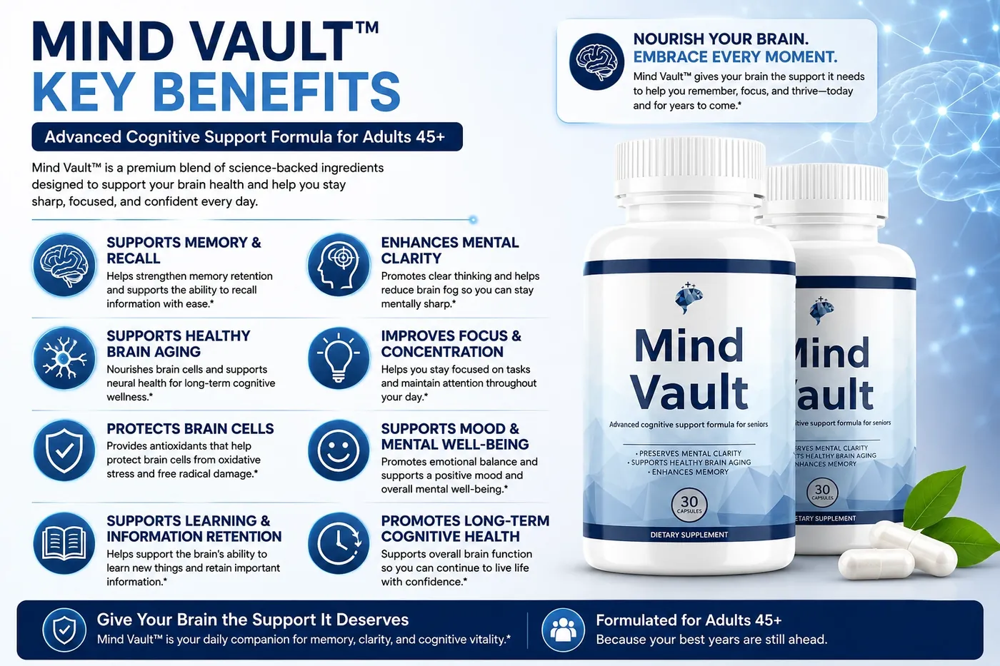

Home / Blog / Staying Social and Your Brain
Why Staying Social Might Matter as Much as Any Supplement

Table of Contents
The link between connection and cognition
Conversation is genuinely demanding work for your brain — following a thread, recalling shared history, reading tone, forming a response, all in real time. That's part of why staying socially engaged is so consistently mentioned alongside sleep and movement as a pillar of healthy aging. It's not a nice-to-have side note; it's active mental exercise disguised as a normal part of life.
What actually counts as "staying social"
It doesn't have to mean a packed calendar. A weekly phone call with a sibling, a standing coffee with a neighbor, a book club, volunteering somewhere with regular faces — all of it counts. The common thread is regularity and genuine back-and-forth, not the size of the gathering.
Building more of it into an ordinary week
Anchor it to something already on the calendar — a Sunday call, a Tuesday walk with a friend, a recurring class. If distance or mobility makes in-person harder, video calls and phone calls still count meaningfully. And if you're supporting a parent or older loved one, helping them keep even one or two of these regular touchpoints can matter as much as any other part of their routine — including a daily supplement.